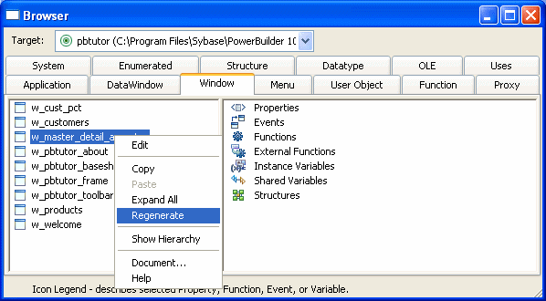

Occasionally you may need to update library entries by regenerating, rebuilding, or migrating them. For example:
When you regenerate an entry, PowerBuilder recompiles the source form stored in the library and replaces the existing compiled form with the recompiled form. You can regenerate entries in the Library painter or by selecting regenerate from the object's pop-up menu in the System Tree.
You can also regenerate and rebuild from a command line. For more information, see Appendix B, "The OrcaScript Language"
 To regenerate library entries in the Library painter:
To regenerate library entries in the Library painter:
Select the entries you want to regenerate.
Click the Regenerate button or select Entry>Library Item>Regenerate from the menu bar.
PowerBuilder uses the source to regenerate the library entry and replaces the current compiled object with the regenerated object. The compilation date and size are updated.
You can use the Browser to easily regenerate all descendants of a changed ancestor object.
 To regenerate descendants:
To regenerate descendants:
Click the Browser button in the PowerBar.
The Browser displays.
Select the tab for the object type you want to regenerate.
For example, if you want to regenerate all descendants of window w_frame, click the Window tab.
Select the ancestor object and choose Show Hierarchy from its pop-up menu.
The Regenerate item displays on the pop-up menu.

Click the Regenerate item.
PowerBuilder regenerates all descendants of the selected ancestor.
For more about the Browser, see "Browsing the class hierarchy".
 Regenerate limitations If you regenerate a group of objects, PowerBuilder will regenerate
them in the order in which they appear in the library, which might
cause an error if an object is generated before its ancestor. For
this reason, you should use a full or incremental build to update
more than one object at a time.
Regenerate limitations If you regenerate a group of objects, PowerBuilder will regenerate
them in the order in which they appear in the library, which might
cause an error if an object is generated before its ancestor. For
this reason, you should use a full or incremental build to update
more than one object at a time.